Sciences et santé
28 fiches en français sur le thème « Sciences et santé », prêtes à imprimer et avec corrigé.
28 ressources
Niveau
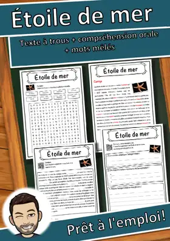
Étoile de mer – Fiche : texte à trous, compréhension orale et mots mêlés
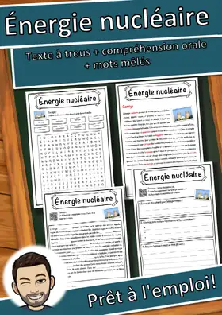
Énergie nucléaire – Fiche : texte à trous, compréhension orale et mots mêlés
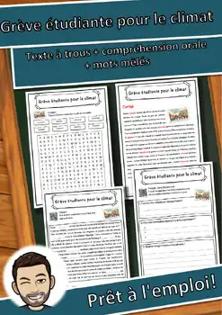
Grève étudiante pour le climat – Lecture, écoute et mots mêlés (FLS/FLE)
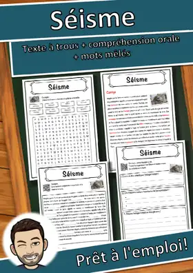
Séisme – Fiche : texte à trous, compréhension orale et mots mêlés
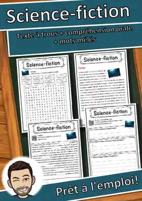
Science-fiction – Fiche : texte à trous, compréhension orale et mots mêlés
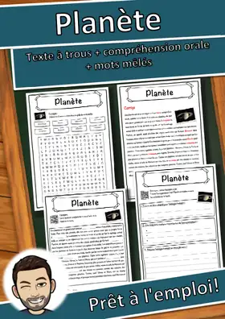
Planète – Fiche : texte à trous, compréhension orale et mots mêlés
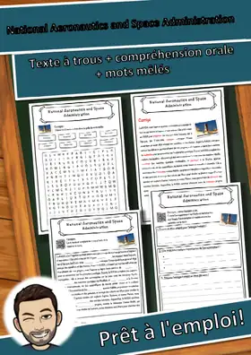
National Aeronautics and Space Administration – Fiche : texte à trous, compréhension orale et mots mêlés
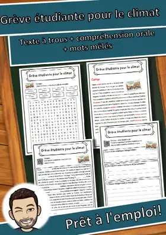
Grève étudiante pour le climat – Fiche : texte à trous, compréhension orale et mots mêlés
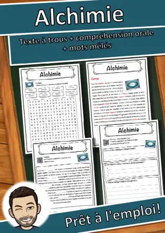
Alchimie – Fiche : texte à trous, compréhension orale et mots mêlés
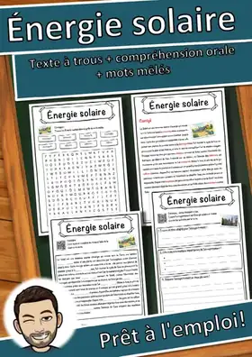
Énergie solaire – Fiche : texte à trous, compréhension orale et mots mêlés
Science de la nature – Fiche : texte à trous, compréhension orale et mots mêlés
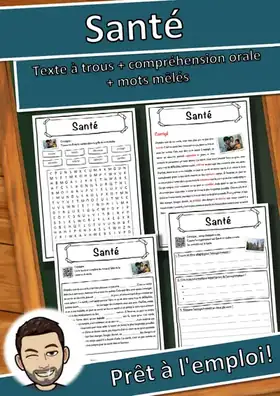
Santé – Fiche : texte à trous, compréhension orale et mots mêlés
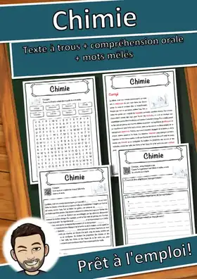
Chimie – Fiche : texte à trous, compréhension orale et mots mêlés
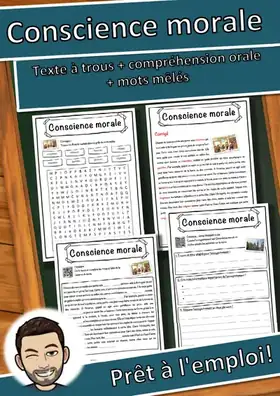
Conscience morale – Fiche : texte à trous, compréhension orale et mots mêlés
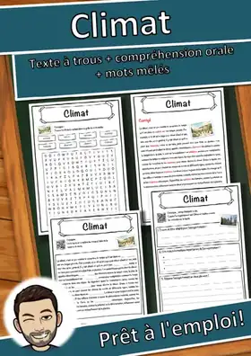
Climat – Fiche : texte à trous, compréhension orale et mots mêlés
Maladie infantile – Fiche : texte à trous, compréhension orale et mots mêlés
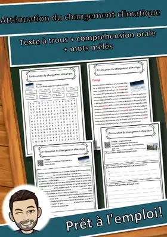
Atténuation du changement climatique – Fiche : texte à trous, compréhension orale et mots mêlés
Énergie renouvelable – Fiche : texte à trous, compréhension orale et mots mêlés
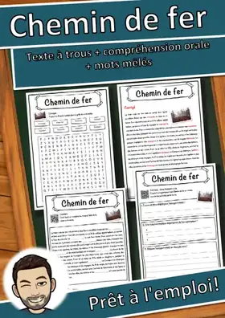
Chemin de fer – Fiche : texte à trous, compréhension orale et mots mêlés
Element – Fiche : texte à trous, compréhension orale et mots mêlés
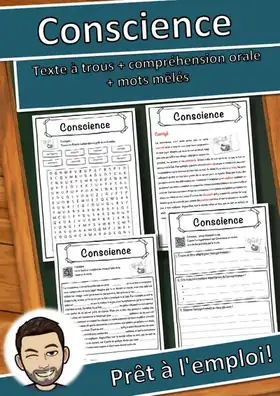
Conscience – Fiche : texte à trous, compréhension orale et mots mêlés
Éruption volcanique – Fiche : texte à trous, compréhension orale et mots mêlés
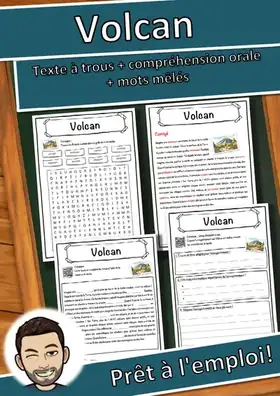
Volcan – Fiche : texte à trous, compréhension orale et mots mêlés
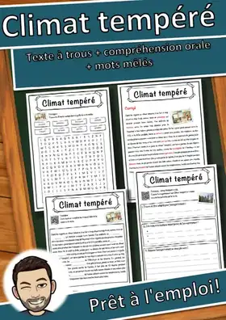
Climat tempéré – Fiche : texte à trous, compréhension orale et mots mêlés
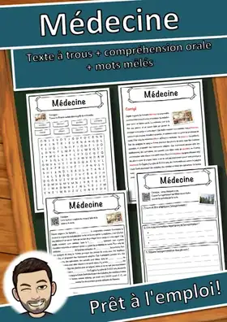
Médecine – Fiche : texte à trous, compréhension orale et mots mêlés
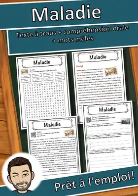
Maladie – Fiche : texte à trous, compréhension orale et mots mêlés
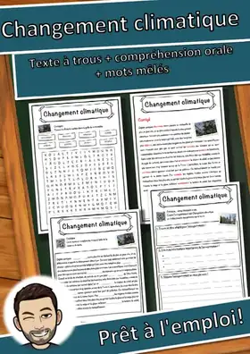
Changement climatique – Fiche : texte à trous, compréhension orale et mots mêlés
Sentier des planètes – Fiche : texte à trous, compréhension orale et mots mêlés
Aucune ressource trouvée – essaie un autre mot ou un autre filtre.